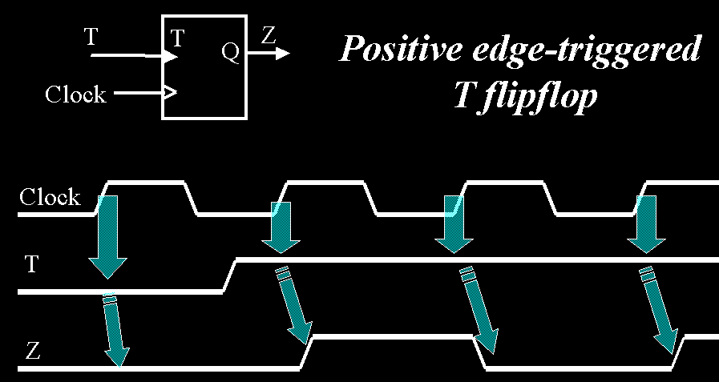
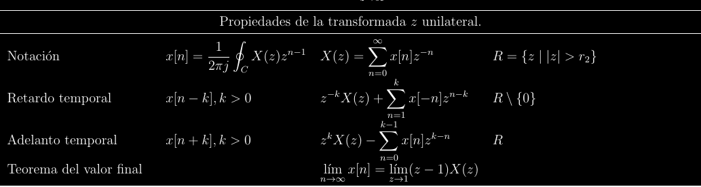
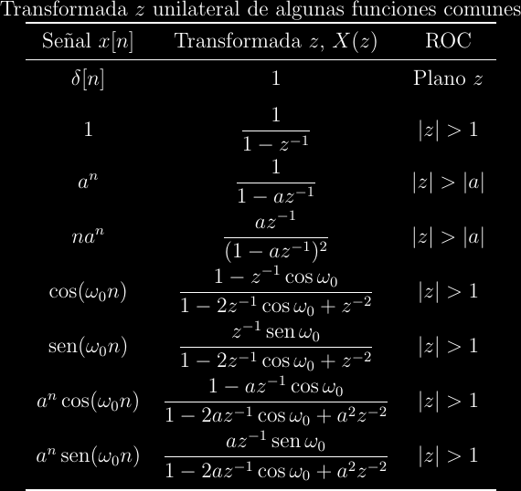
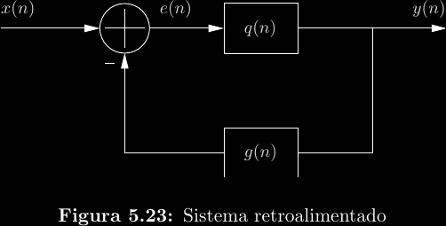

Sistemas en tiempo discreto
Sistemas LTI
La misma teoría para sistemas LTI aplica aquí.
Convolución discreta
La integral se vuelve una suma.
\[y(n) = x(n)*h(n) = \sum_{k = -\infty}^{\infty}{x(k)h(n - k)}\]
Ecuaciones de diferencias
Una ecuación de diferencias es el ańalogo discreto de una ecuación diferencial. Generalmente, estas ecuaciones surgen de recursión: la dependencia de un estado \(y(n)\) en un estado previo \(y(n - k)\) en el caso causal, o un estado futuro \(y(n + k)\) en el caso acausal. Esto típicamente aparece en sistemas retroalimentados. Por ejemplo, un flip-flop T puede modelarse a partir de la siguiente ecuación de diferencias: \[Q(n) = Q(n - 1)\oplus T(n)\]

El sistema discreto conformado por este flip-flop necesita de exactamente una condición inicial, ya que la ecuación de diferencias no establece el estado al momento del primer flanco de reloj, solo la relación entre estados sucesivos. La condición inicial en la figura anterior es \(y(-1) = 0\).
Al igual que con la transformada de Laplace y ecuaciones diferenciales, la resolución de ecuaciones de diferencias requiere la transformada \(z\) unilateral.
\[F_u(n) = \mathcal Z_u\{f(n)\} = \sum_0^{\infty}{f(n)z^{-n}}\]
Propiedades de la transformada unilateral

Algunas transformadas unilaterales

Descomposición de la respuesta
Toda respuesta de cualquier sistema puede expresarse como la suma de dos componentes:
-
La respuesta natural \(y_{zi}(n)\), la cual ocurre cuando la entrada es nula ("zero input").
-
La respuesta forzada \(y_{zs}(n)\), la cual ocurre cuando las condiciones iniciales son nulas ("zero state").
\[y(n) = y_{zi}(n) + y_{zs}(n)\]
La respuesta natural siempre estará asociada a las condiciones iniciales, y la respuesta forzada siempre estará asociada a la entrada. Por ejemplo, la respuesta completa en dominio \(z\) de un sistema puede ser:
\[Y(z) = {\frac{\frac{4}{5}y(-1) - \frac{1}{4}z^{-1}y(-2)}{1 - \frac{4}{5}z^{-1} + \frac{1}{4}z^{-2}}} + {\frac{1 - z^{-2}}{1 + \frac{1}{4}z^{-2}}X(z)} = Y_{zi}(n) + Y_{zs}(n) \]
Diagramas de bloques
Un diagrama de bloques modela a un sistema gráficamente. En el caso de sistemas discretos, puede encontrarse una ecuación de diferencias a partir de su diagarama de bloques y viceversa.

En este caso, podemos decir que:
\[ \begin{align*} Q(z) &= \frac{Y(z)}{E(z)} \\ E(z)Q(z) &= Y(z) \\ (X(z) - G(z)Y(z))Q(z) &= Y(z) \\ X(z)Q(z) &= Y(z)(1 + G(z)Q(z)) \\ \implies H(z) &= \frac{Y(z)}{X(z)} = \frac{Q(z)}{1 + G(z)Q(z)} \end{align*} \]